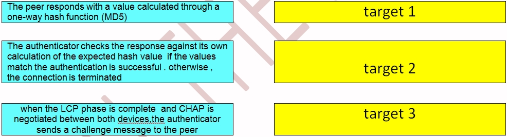

gil-ryan/
gil-ryan/lab
Password Authentication Protocol (PAP)
& Challenge Handshake Authentication Protocol (CHAP)

Drag and drop the challenge Handshake Authentication Protocol steps from the left into the correct order in which they occur on the right.
Answer:
- target 1 = when the LCP phase is complete and CHAP is negotiated between both devices, the authenticator sends a challenge message to the peer
- target 2 = the peer responds with a value calculated through a one-way hash function (MD5)
- target 3 = the authenticator checks the response against its own calculation of the expected hash value, if the values match the authentication is successful, otherwise, the connection is terminated
The Challenged Handshake Authentication Protocol (CHAP) (defined in RFC 1994) verifies the identity of the peer by means of a three-way handshake. These are the general steps performed in CHAP;
- After the LCP (Link Control Protocol) phase is complete, and CHAP is negotiated between both devices, the authenticator sends a challenge message to the peer.
-
- The peer responds with a value calculated through a one-way hash function (Message Digest 5 (MD5))
- The authenticator checks the response against its own calculator of the expected has value. If the values match, the authentication is successful. Otherwise, the connection is terminated.